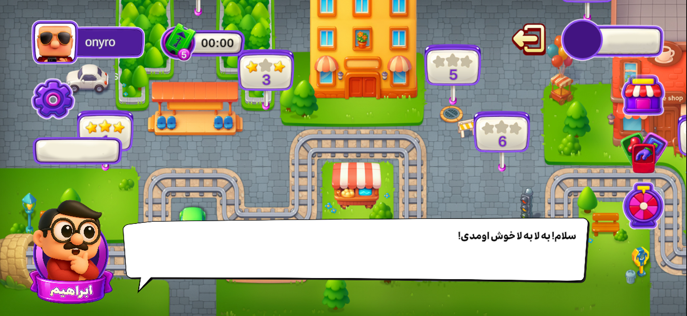
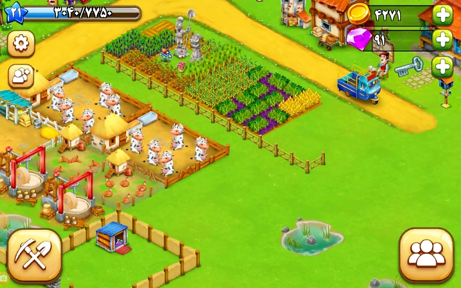
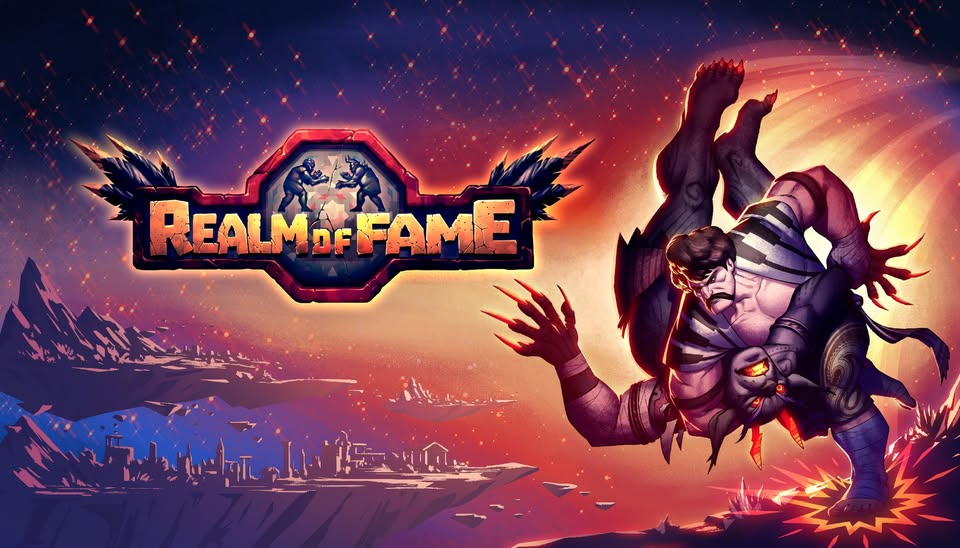
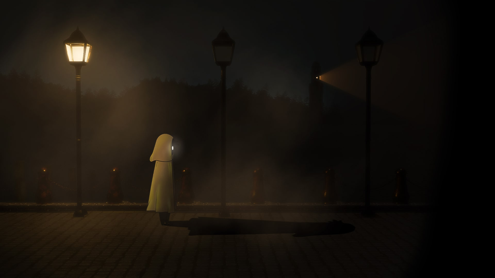

Mohammad (onyro) Abbasi
Game Designer
I'm a young game designer passionate about crafting memorable interactive experiences.
I have experience working freelance and collaborating with creative teams on both
commercial and personal projects. I love learning new techniques, working closely with teams,
and finding creative solutions to design challenges throughout production.
Education
- Diploma: Shahid Hayri Technical School, Borujen (Networking & Software Engineering)
- Associate Degree: Shahid Mohajer Technical College, Isfahan (Software Engineering)
- Bachelor's — In progress: Enghelab-e Eslami Technical College, Tehran (Digital Animation)
Professional Experiences

GIF Studio — La be la Game (Lead Game Designer)
- Was there since the project definition.
- Designed the core game mechanics.
- Contributed to designing puzzles.
- Made the F2P Economy.
- Designed the whole UX of the game.
- Animated UI Assets.

Brainladder — Sharifabad Game Team (Game Designer)
- Designed season pass systems and level layouts for "Regetta".
- Contributed to puzzle tuning and design for "Amirza" testing stages.
- Concept and design work for the "Nemat Motori" mechanic.
- Task management and general project maintenance.
- Animated UI Assets of "Sharif Abad".
- Animated "Amirza" Characters.

Black Cube Games — Game Designer & Game Audio Specialist
- Currently working at Black Cube Games as part of the design team.
- Also working with the Game Audio team, creating interactive music and sound effects.

Personal Project — Lamplighter
- Lead designer for a compact, atmospheric puzzle-adventure prototype.
- Focused on player flow, emergent interaction, and simple but deep mechanics.
Skills & Tools
- Game systems design, level & progression design
- Prototyping (paper & digital), playtesting and iteration
- Task management, teamwork, and cross-discipline communication
- Familiar with Unity workflow
- Adobe apps
What I bring to a team
I aim to make games that feel intentional — mechanics that reward player curiosity,
clear feedback, and levels that invite experimentation. I enjoy working closely with
artists and programmers to turn ideas into playful, polished experiences.